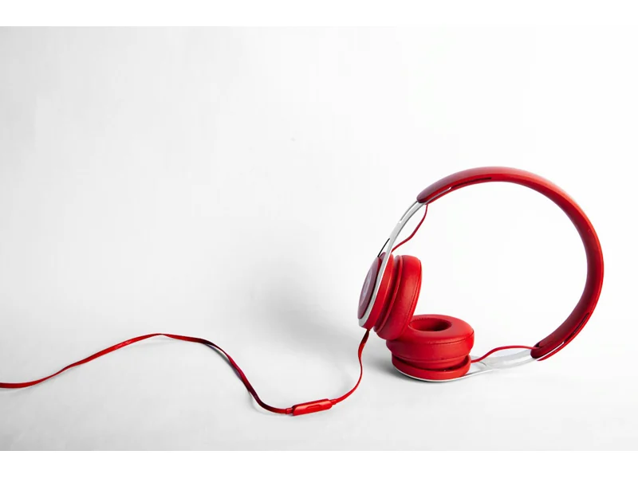
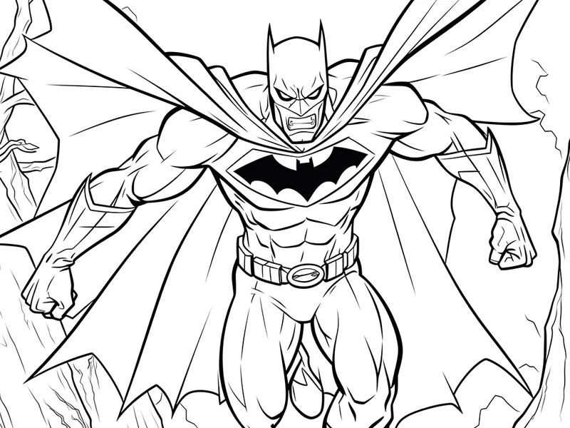
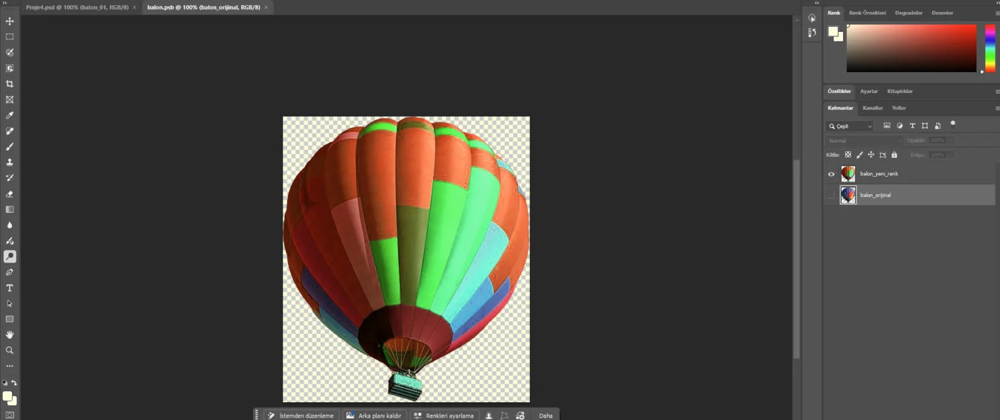

Adobe Photoshop · November 2026
Graphic Animation 1 — Midterm Portfolio
Six Adobe Photoshop studies: selective colour, product advertising, drawing colourisation, Smart Objects, image stacking and web interface design.
Onur Can Orhan · Akdeniz Üniversitesi · Computer Programming
Project walkthrough
Watch the six studies and their editing stages in the project walkthrough.
Watch on YouTubeOpens on YouTube.
Selective colour with History Brush
A colourful bicycle on a monochrome street
I cropped the photo to a 4:3 frame at 800 × 600 pixels and 72 dpi. After converting the scene to monochrome, I restored colour to the red bicycle and sunflowers to guide attention towards the subject.
How I made it
I selected the subject with Select Subject, used the original colour state as the History Brush source, and painted colour back into the selected area while keeping the surroundings monochrome.
Crop · Select Subject · History Brush · Selective colour


Product advertisement
NOVA AUDIO headphone poster
I created a dark product poster centred on red headphones, combining the “Feel the sound” headline, product features and sound rings in one composition.
How I made it
I isolated the headphones with Select Subject and organised the product, shadow, reflection, highlights and background into separate layers. A vertically flipped copy fades through a white-to-black gradient on a layer mask to create the reflection; text and decorations are grouped.
Cutout · Layer mask · Gradient · Typography · Reflection

Colouring a pencil drawing
Colouring a Batman drawing in layers
I coloured a pencil drawing while preserving its outlines, keeping the costume, cape, mask, belt and background individually editable.
How I made it
I painted each selected region on its own layer and saved selections as alpha channels. The line layer stays above the colours in Multiply mode. Burn and Dodge add shadow and light to give the flat colours more volume.
Alpha channels · Multiply · Dodge · Burn · Layer organisation


Smart Object
Cappadocia: 12 balloons from one source
I placed 12 instances of the same Smart Object over a Cappadocia landscape, varying their scale and opacity to create depth between nearby and distant balloons.
How I made it
I isolated one balloon, converted it to a Smart Object and grouped its instances. Editing the source with Edit Contents and Hue/Saturation updated all 12 instances together. The original balloon layer remains preserved and hidden.
Smart Object instances · Edit Contents · Hue/Saturation · Depth



Image Stack
Removing a moving boat from the Antalya coast
I combined 25 frames of an Antalya coastal scene captured from a fixed camera, aiming to remove the moving boat while preserving the landscape.
How I made it
I loaded the 800 × 600 pixel, 72 dpi frames as layers, converted them into one Smart Object and applied Stack Mode > Median. The boat moving between frames was removed while the fixed coastline remained.
25 frames · Smart Object · Median stack mode · Moving-object removal


Web interface design
A 960-grid interface study for Pera Museum
Using the Pera Museum home page as a reference, I created a Photoshop interface study, moving from a sketch to content hierarchy and alternative layouts on the 12-column 960.gs grid.
How I made it
I used 960_grid_12_col.psd and sketched on 960_sketch_12_col. Header, navigation, hero, events, social banner, collection and footer are grouped. Layer Comps stores three variants: Classic, Sidebar and Events First.
960.gs · 12 columns · Sketch · Layer Comps · Three layout variants


Educational interface study. Reference: Pera Müzesi · 960.gs
What this project brought together
Selection, masks, layer organisation, colour, typography and non-destructive editing appear in different contexts across these six studies. The before-and-after images document the actual results; the Smart Object and interface sections also show the layer structure and alternative layouts.
Back to projects